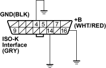

The on board diagnostic check is the starting point for any driveability diagnosis. Before using this procedure, perform a careful visual physical check of the ECM and engine grounds for cleanliness and tightness.
The on board diagnostic check is an organised approach to identifying a problem created by an electronic engine control system malfunction.
- Turn the ignition switch ON (II).
- Observe the malfunction indicator lamp (MIL).
Is the MIL ON?
YES – Go to step 3.
NO – Go to No MIL Chart. 
- Turn the ignition switch OFF.
- Install a scan tool.
- Turn the ignition switch ON (II).
- Attempt to display ECM engine data with the scan tool.
Does the scan tool display ECM data?
YES – Go to step 7.
NO – Go to step 9.
- Start the engine at idling.
Does the engine start and continue to run?
YES – Go to step 8.
NO – Go to Cranks But Will Not Run.
- Select ''Display DTCs'' with the scan tool.
Are there any DTCs?
YES – Go to applicable DTC chart.
NO – Go to symptom table.
- Turn the ignition switch OFF.
- Disconnect the ECM connector.
- Check the scan tool data communication circuit (ECM connector terminal No. 48) for an open or short to voltage. Also check the DLC ignition feed circuit for an open or short to ground and the DLC ground circuit for an open.
DATA LINK CONNECTOR (DLC)

Wire side of female terminals
Is a problem found?
YES – Repair for an open or short in the circuit.
NO – Substitute a known-good ECM and recheck. If symptom/indication goes away, replace the original ECM.